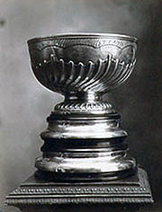

All About Hockey
History
Below is a timeline of the history of hockey.
- 400 BCE
- Forms of hockey such as ball and stick have been played as early as 400 BCE most likely in Persia, Egypt, China and Greece.
- 1600s
- The sport of ball and stick moved to the North in the 1600s. Paintings show the Dutch played a form of golf on ice and in 1642, Scotland’s Edinburgh Skating Club played hurling on ice. When the Europeans came to North America, they noticed the Native Americans played lacrosse and in some areas on ice. It was this that inspired field hockey and also ice hockey which was played with a ball instead of a puck. The picture below is a painting of the Dutch playing golf on ice.

- 1870s
- In 1872, a man name James Creighton moved to Montreal, Quebec from Halifax, Nova scotia introducing hockey to his friends. In 1875 he organized the first indoor hockey practice. The fear was that the ball would bounce all over the place causing injury so he fashioned a flat cylindrical-shaped piece of wood called a puck. Today, we still play with a puck except it is made of rubber.
- 1900s
- The first proffessional hockey league was call the International Proffessional Hockey League (IPHL) which was established in 1904 but only lasted 3 years when it folded in 1907. The National Hockey Association (NHA) was founded in 1909. Due to owner disagreements, in 1917, the NHL was formed while the owners of the NHA could settle their lawsuits. In 1918 the lawsuits still were not settled so the NHA was suspended and all the teams moved to the NHL. The trophies such as the Stanley cup which was donated by lord stanley, the current governor general of Canada were passed on to the NHL aswell. The Picture below on the left is the stanley cup when it was first donated. The picture on the right is the stanley cup now.
|  |  |
|---|
Back to the Top